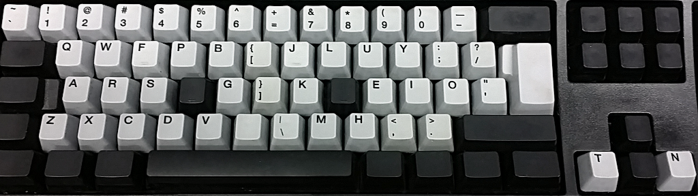

Other Typing Tricks
AMPHETYPE AND TYPING TRAINING
Amphetype is a cross-platform, layout agnostic typing program written by user tristesse. I think it's very nice for typing texts, analyzing weaknesses and generating lessons. Check it out directly or from my Amphetype topic which contains some nifty training tricks.

Amphetype about to start a book text session (from Berens' Greek/Roman mythology)
"COLEMAKOID" MESSAGEASE LAYOUT FOR TOUCH SCREEN TYPING
As mentioned, this is mainly for touch screen devices (Android/Apple/etc) and as such I'll only mention it briefly here. In the Colemakoid MessagEase layout page you can read more about this wonderful touch screen "keyboard" and my preferred settings for it. Highly recommended for your touch devices!

My "Colemakoid" drag mappings for the MessagEase touch screen keyboard (shown with my "subtle" color scheme)
THE TYPING OF THE DEAD – TYPING GAMING
This is a weird and wonderful thing: The rail shooter House Of The Dead converted into a typing game! Heh. So much fun.
The conversion is quite faithful, but with extra silly elements added – particularly in the first game. Zombies will often throw or wield kitchen utensils instead of knives and axes, and the main characters have a SEGA Dreamcast console with a huge cell battery strapped on their back as well as a SEGA keyboard before them.
The original is still lying about and considered abandonware, so if you're interested you may give it a spin of the barrel. The original's drills can be downright handy for practising a particular aspect of your typing. There are exercises focused on typing speed, accuracy, reaction and special keys. There's even a typing tutorial (QWERTY-based but still useful).

In The Typing Of The Dead, you'll meet various challenges such as the Tower boss. Type in the right answer to defeat it.
The second installment, Typing Of The Dead: Overkill is available on Steam, optionally bundled with several add-on dictionaries. It has more shine, but only three extra minigame modes. And I have a feeling that it's managed the nigh-impossible task of being even cheesier than the original. Beware! ;-)

The Typing Of The Dead: Overkill has hi-res sound & graphics, and custom dictionaries such as this Shakespeare one!
For the record: I like both! The original is what I'll go to for typing training, though.
More info and downloads through these links:
The Typing Of The Dead 2000 (PC version)
The Typing Of The Dead: Overkill (Steam)
Technical tips for TotD 2000:
- After unpacking the .rar file there's an install.exe and then a setup.bat you should run.
- I've gotten it to run on an extended monitor, without changing color depth (on Win 10). – If you have a second monitor and want to play on your main one, disable the other.
- I have to start it up with a standard US or UK layout active, or some keys will be weird. – After that, I can switch to any other Win layout such as the one I've made with MSKLC.
- Locale layouts may struggle as they can have some symbols on AltGr or dead keys.
- PKL works so I can use Extend to navigate etc.
- The gun sound files (TotD\sound\SE\COMMON\gun#_22.wav [1-5]) can be replaced with ... ... typing sound files (TotD\sound\SE\typing\typing#.wav [1-5]) which are more pleasant.
- If it's hard, set it to "Very Easy" in Options. There are other settings there that may help too.
HARDWARE REMAPPING DEVICES (QUICKIE)
I've decided to call this kind of device a QUICKIE (QWERTY USB In, Colemak Key Input Emulated)! :-) A more proper name for it would be "USB-to-USB remapping device".
A very interesting XKB/Win/Mac-independent trick. A USB-to-USB device that plugs between the keyboard and whatever you're connecting your keyboard to, provides an OS independent solution that can accommodate many of my tricks! For people having to deal with zealous IT security rules, this may be the only solution short of getting an expensive remappable keyboard. It could let you type Colemak to, say, a PlayStation. And it could be fun to make one yourself if you're adventurous and DIY oriented!
It'll remap only key strokes so basic layout and ergo mods such as Colemak-Curl(DH)AngleWide(+Extend) are possible, but not easily AltGr or dead key mods such as Colemak[eD].
The safest and easiest option may be to order the brilliant USB to USB Converter from GeekHack user Hasu, who has also developed the TMK software for converting keyboards to more awesome keyboards. I provide TMK files in the USB-2-USB Big Bag topic.
For more info, see the Big Bag of Tricks page – USB2USB edition! Note that some keyboard controllers can be programmed with TMK or its fork QMK. My code should work for these controllers too, at least using TMK, and then you wouldn't need a separate device.

Hasu's USB to USB Converter for TMK Key mapping
PHYSICAL KEYBOARD MODDING
You don't need special hardware to use a special layout. On my laptop I blind type happily away using Colemak-CAW and the only change I've made is to scratch the N (QWERTY K) key a little to aid homing since I have a Wide ergo mod. But some will want the visual to match the experience. And naturally, many layout enthusiasts are also keyboard hardware enthusiasts!
These days, there are many many options to buy or make a keyboard to your liking. I have an old and somewhat dated physical board modding topic where you may pick up some ideas, but you may also want to search around for newer topics.
I also suggest checking out the Deskthority.net Wiki and the GeekHack.org forums as they are great founts of knowledge and opinions on most things keyboard. Especially mechanical switches, but lots of other things too. For all questions hardware, there's also the Colemak Discord #Hardware channel, always full of knowledgeable and helpful enthusiasts.
My Unicomp SpaceSaver Buckling Spring (IBM Model M ISO type) keyboard with "American/Ninja" caps, splendidly sporting the Colemak-CAW layout.